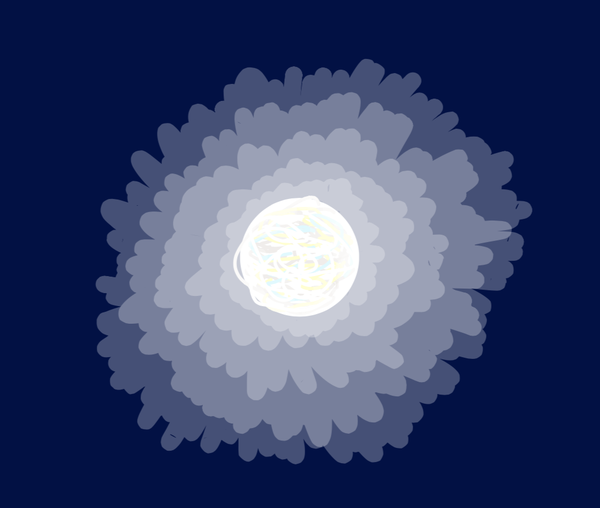
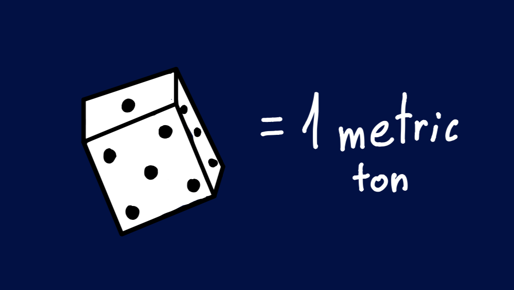
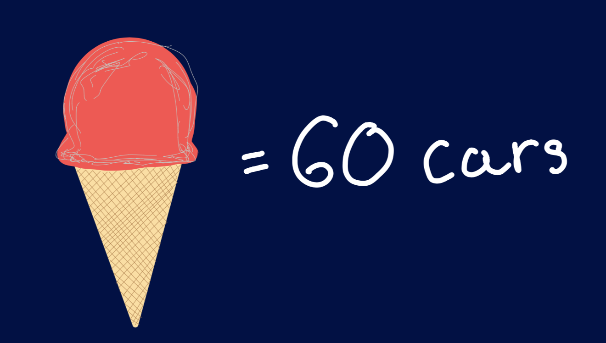
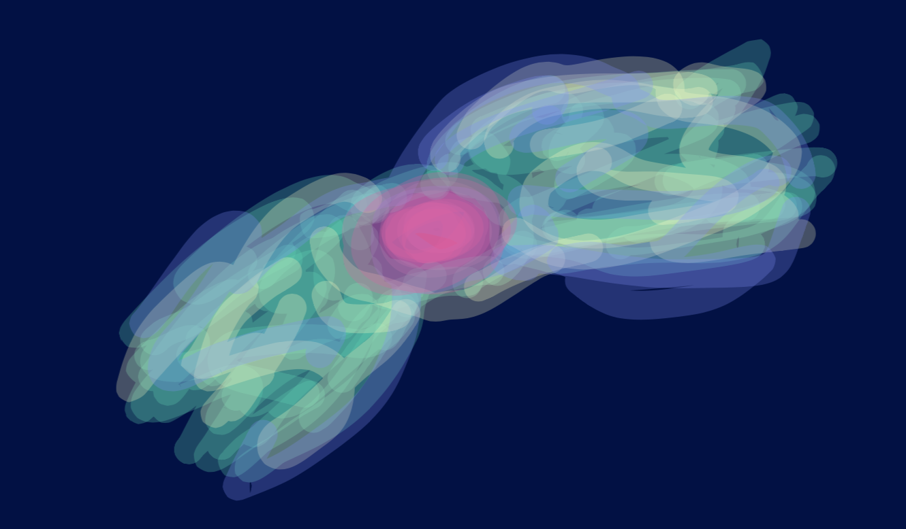
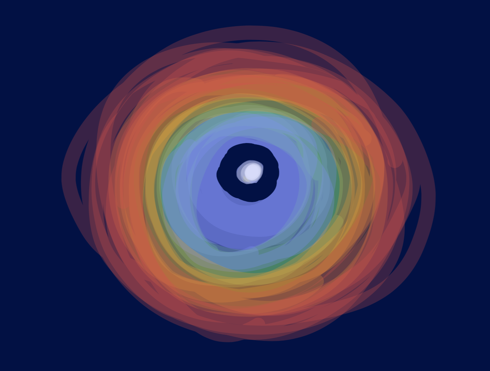

What are white dwarfs?
A white dwarf is a stars naked core, the size of Earth.
But that's not it. There are a lot of interesting things about them and here is a list of them:
- They are incredibly dense, one cubic centimeter ( a six sided dice ) weighs a million grams = one METRIC ton 
- Their gravity is about 100 000 TIMES EARTHS GRAVITY! 
- If you stood on the surface of a white dwarf and you had 75 pounds, you would weigh 7500 TONS!
Well you can't really stand on the surface. You would be a grease smear because of the immense gravity.
What are planetary nebulae?

Planetary nebulae are gases around a newly formed white dwarf that got zapped by it's immense radiation.
These are all beautiful planetry nebulae:
- 
- 
Normall planetry nebulae have a spherical shape, and not with spirals, jets, and so on. So how do planetary nebulae get all of these amazing shapes? The answer may actualy lie in the planets. When a star has a planetary system and turns into a red giant it swallows it's orbiting planets. Then the planets still orbit inside the star creating the ripples in the winds from the expanding gass and forms all of the amazing shapes that planetary nebulae come with.